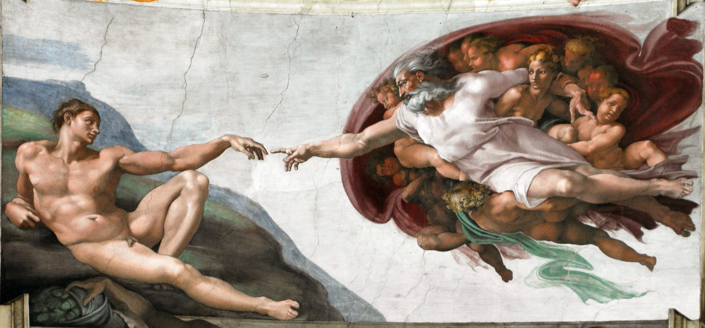
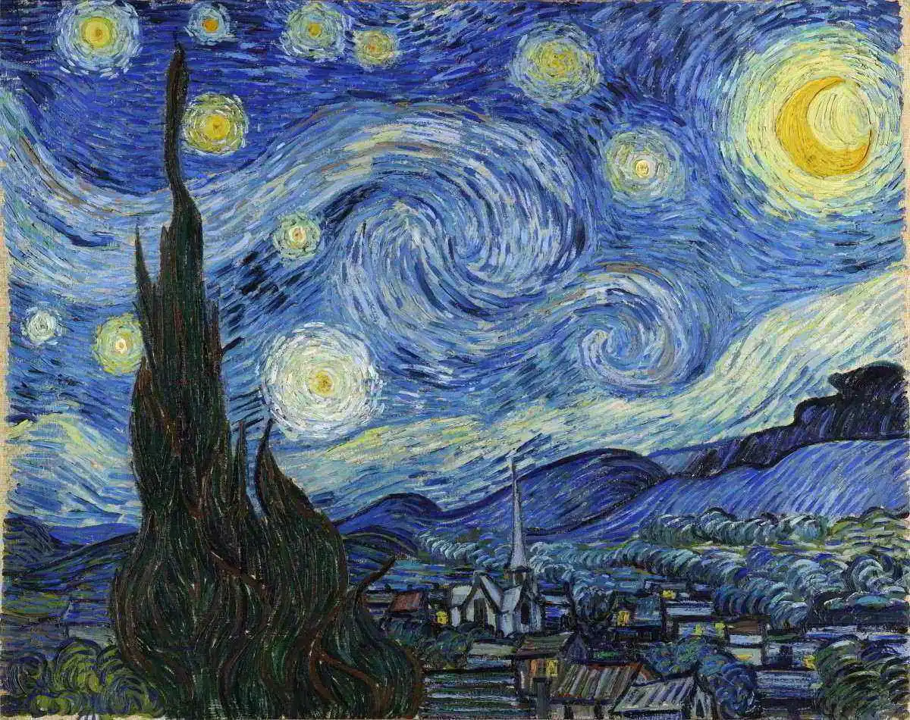

A criação de Adão
A Criação de Adão é um afresco de 280 cm x 570 cm, pintado por Michelangelo Buonarroti por volta de 1511, que fica no teto da Capela Sistina. A cena representa um episódio do Livro do Gênesis no qual Deus cria o primeiro homem a partir do pó da terra: Adão.
- Pintado por Michelangelo Buonarroti.

A noite estrelada
A Noite Estrelada é uma pintura de Vincent van Gogh de 1889. A obra retrata a vista da janela de um quarto do hospício de Saint-Rémy-de-Provence, pouco antes do nascer do sol, com a adição de um vilarejo idealizado pelo artista. A tela faz parte da coleção permanente do Museu de Arte Moderna de Nova Iorque desde 1941.
- Pintado por Van Gogh.
A Última Ceia
A Última Ceia é uma pintura mural, muitas vezes definida incorretamente como afresco, obtida com uma técnica mista "seca" sobre gesso de Leonardo da Vinci para a igreja de Santa Maria delle Grazie em Milão, Itália.
- Pintado por Leonardo Da Vinci.
A Praia de Sainte-Adresse
A Praia de Sainte-Adresse é uma famosa pintura a óleo sobre tela de Claude Monet, criada em 1867. A obra retrata uma praia na cidade costeira de Sainte-Adresse, na Normandia, França, onde Monet passava seus verões na casa de sua tia.
- Pintado por Claude Monet.

Guernica
Com 349 cm de altura por 776,5 cm de comprimento, Guernica, uma das obras mais famosas de Pablo Picasso (1881-1973), pintada a óleo em 1937, é uma “declaração de guerra contra a guerra e um manifesto contra a violência”. O quadro, além de ser um ícone da Guerra Civil Espanhola, é hoje um símbolo do antimilitarismo mundial e da luta pela liberdade do ser humano.
- Pintado por Pablo Picasso.

Girassóis e Vaso
Esta obra é um verdadeiro tributo à beleza do campo brasileiro, perfeita para quem ama a natureza e quer levar um pouco de sol para dentro de casa.
Antônio Poteiro captura a essência dos girassóis com cores radiantes e detalhes que transmitem alegria, criando uma atmosfera vibrante e acolhedora.
- Pintado por Antônio Poteiro.